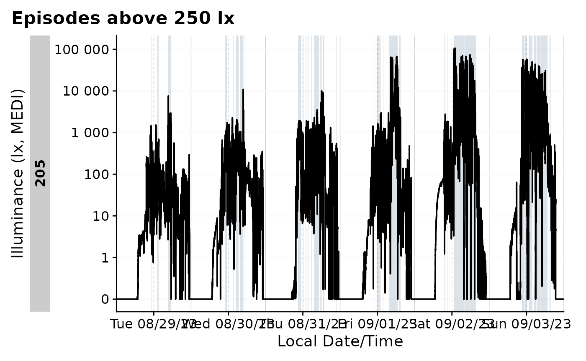

Creating, adding, extracting, and visualizing states in the time
series collected through wearable devices is essential to give context
to light exposure data and related measurements.
States, in this case, are defined as logical,
categorical, binned, or ordered variables, that exist somewhere on the
time series of wearable data. That means states have a beginning and end
time, and are associated with specific groups of data (e.g., the data by
participant). A lot comes down to the durations states are active, and
how other measurements behave during these states, which is why there is
a heavy focus on durations in summary functions of
LightLogR.
A special variant of states are clusters, which require a defined minimum/maximum length and that can contain defined interruptions of a given state and still be considered one cluster. One example might episodes spent in Daylight. If a participant spends 30 minutes outside above 1000 lx, then goes inside for 1 minute, and then goes outside again for 20 minutes, a strict assessment of times would yield two episodes of 30 and 20 minutes. Depending on the research topic, this might well be considered one episode of 51 minutes, however.
This article will dive into the various functions available in the
LightLogR package to facilitate these analyses in a
structured, reproducible, and efficient manner.l
The article will be divided into the following sections:
- Creating states: How to work with the data you have
- Adding states: How to add states to the data
- Clusters: Working with clusters
library(LightLogR)
library(tidyverse)
#> ── Attaching core tidyverse packages ──────────────────────── tidyverse 2.0.0 ──
#> ✔ dplyr 1.1.4 ✔ readr 2.1.5
#> ✔ forcats 1.0.0 ✔ stringr 1.5.1
#> ✔ ggplot2 3.5.2 ✔ tibble 3.2.1
#> ✔ lubridate 1.9.4 ✔ tidyr 1.3.1
#> ✔ purrr 1.0.4
#> ── Conflicts ────────────────────────────────────────── tidyverse_conflicts() ──
#> ✖ dplyr::filter() masks stats::filter()
#> ✖ dplyr::lag() masks stats::lag()
#> ℹ Use the conflicted package (<http://conflicted.r-lib.org/>) to force all conflicts to become errors
library(gt)Importing Data
We will use data imported and cleaned already in the article Import & Cleaning.
#this assumes the data is in the cleaned_data folder in the working directory
data <- readRDS("cleaned_data/ll_data.rds")As can be seen by using gg_overview(), the dataset
contains 17 ids with one weeks worth of data each, and one to three
participants per week.
data |> gg_overview()
Creating states
Whether existing states are part of the data very much depends on the devices employed in the data. These could be wear or non-wear indicators (usually for wrist-worn devices) or sleep/wake state. Most of the time, however, states have to be added to or created from the data.
A simple example are binned continuous variables of light exposure. For melanopic EDI, it is typical to look for episodes ≤1lx (recommended for the sleep environment), ≤10lx( recommended during the evening), or ≥250lx (recommended during daytime). This and many other states can be created by established data analysis pipelines, which we will not dive into here. Rather, we will focus on how to use these variables, once they are created.
We start by adding the example above to our dataset.
Brown_cut() does exactly that and adds a new column
state to the dataset. We can choose the cutoff values,
labels, and state name, but will use the defaults here. We also filter
the dataset to only include two participants and to 1 minute intervals,
which will make plots more manageable.
dataset <-
data |>
filter(Id %in% c("201", "202")) |>
aggregate_Datetime(unit = "1 min") |>
Brown_cut()
dataset |>
ungroup() |>
count(state) |>
gt()| state | n |
|---|---|
| ≤1lx | 6128 |
| ≤10lx | 2731 |
| NA | 5138 |
| ≥250lx | 3285 |
One of the first questions an analyst might have after adding states to the dataset is: How long did each state last? and When do these states appear?. This is a very important question, as it can be used to assess the quality of the data, and also to assess the validity of the created states. For example, if a participant spends 90% of their time in a state, this might be an indication that the state is not well defined.
For a simple quantification of the states, durations()
can be used. It will return a tibble with the duration of each group. By
default, this will only divide by participant (default group), but can
easily be adjusted. If we also provide a variable, the function can
check how much of the data is missing (i.e., NA) and how much is
present. This is, alongside other summary statistics useful to assess
the quality of the data.
#without grouping
dataset |>
durations()
#> # A tibble: 2 × 2
#> # Groups: Id [2]
#> Id duration
#> <fct> <Duration>
#> 1 201 518460s (~6 days)
#> 2 202 518460s (~6 days)
#providing a variable and show additional stats
dataset |>
durations(MEDI, show.missing = TRUE, show.interval = TRUE)
#> # A tibble: 2 × 5
#> # Groups: Id [2]
#> Id duration missing total interval
#> <fct> <Duration> <Duration> <Duration> <Duration>
#> 1 201 518460s (~6 days) 0s 518460s (~6 days) 60s (~1 minutes)
#> 2 202 518460s (~6 days) 0s 518460s (~6 days) 60s (~1 minutes)
#extend grouping
extract <-
dataset |>
group_by(state, .add = TRUE) |>
durations(MEDI) |>
ungroup(state)
extract |> gt()| state | duration |
|---|---|
| 201 | |
| ≤1lx | 174240s (~2.02 days) |
| ≤10lx | 64860s (~18.02 hours) |
| NA | 113340s (~1.31 days) |
| ≥250lx | 166020s (~1.92 days) |
| 202 | |
| ≤1lx | 193440s (~2.24 days) |
| ≤10lx | 99000s (~1.15 days) |
| NA | 194940s (~2.26 days) |
| ≥250lx | 31080s (~8.63 hours) |
While this is a good start, we might require additional information -
for example what the mean melanopic EDI was during each state, or the
actigraphy TAT (time above threshold) was. We can add these to the
summary with extract_metric(). The function requires both
the extract and the original dataset as input.
#add metrics
extract |>
extract_metric(
dataset,
identifying.colname = state,
MEDI = mean(MEDI),
TAT = mean(TAT)
) |>
gt() |>
fmt_number(c(MEDI, TAT))| state | duration | MEDI | TAT |
|---|---|---|---|
| 201 | |||
| ≤1lx | 174240s (~2.02 days) | 0.02 | 0.45 |
| ≤10lx | 64860s (~18.02 hours) | 3.71 | 1.19 |
| NA | 113340s (~1.31 days) | 95.09 | 2.17 |
| ≥250lx | 166020s (~1.92 days) | 1,860.59 | 3.52 |
| 202 | |||
| ≤1lx | 193440s (~2.24 days) | 0.03 | 0.05 |
| ≤10lx | 99000s (~1.15 days) | 5.51 | 0.61 |
| NA | 194940s (~2.26 days) | 50.46 | 1.19 |
| ≥250lx | 31080s (~8.63 hours) | 3,068.53 | 24.06 |
This answers our first question, but what about when
these states appear? For a visual representation, we can use
gg_state(), and add-on to gg_day() and
gg_days(). As Brown_cut() created a factor
variable with NA as a factor level, it makes sense to
convert NA levels to real NA values. This can
be done with forcats::fct_na_level_to_value().
#helper for colors
color <- ggplot2::scale_fill_manual(
values=c(`≤1lx` = "#868686FF", `≤10lx` = "#EFC000FF", `≥250lx` = "#0073C2FF")
)
#plotting states
dataset |>
mutate(state = fct_na_level_to_value(state)) |>
filter_Date(length = "3 days") |>
gg_days() |>
gg_state(state, aes_fill = state) +
color
A numeric representation of the when can be achieved
with extract_states().
#extract states
extract <-
dataset |>
extract_states(
state
)
extract |> head(3) |> gt()| state.count | epoch | start | end | duration |
|---|---|---|---|---|
| 201 - ≤1lx | ||||
| ≤1lx 1 | 60s (~1 minutes) | 2023-08-14 23:59:30 | 2023-08-15 06:07:30 | 22080s (~6.13 hours) |
| ≤1lx 2 | 60s (~1 minutes) | 2023-08-15 11:17:30 | 2023-08-15 11:19:30 | 120s (~2 minutes) |
| ≤1lx 3 | 60s (~1 minutes) | 2023-08-15 14:45:30 | 2023-08-15 14:48:30 | 180s (~3 minutes) |
This is a far more granular representation compared to the result
derived with durations(). Here, every episode of a state is
one row, each with start, end, duration, and epoch. Same as before, we
can add metrics to the summary with extract_metric().
extract <-
extract |>
extract_metric(
dataset,
identifying.colname = state.count,
MEDI = mean(MEDI),
TAT = mean(TAT)
)
extract |>
head(3) |>
gt() |>
fmt_number(c(MEDI, TAT))| state.count | epoch | start | end | duration | MEDI | TAT |
|---|---|---|---|---|---|---|
| 201 - ≤1lx | ||||||
| ≤1lx 1 | 60s (~1 minutes) | 2023-08-14 23:59:30 | 2023-08-15 06:07:30 | 22080s (~6.13 hours) | 0.01 | 0.00 |
| ≤1lx 2 | 60s (~1 minutes) | 2023-08-15 11:17:30 | 2023-08-15 11:19:30 | 120s (~2 minutes) | 0.70 | 0.33 |
| ≤1lx 3 | 60s (~1 minutes) | 2023-08-15 14:45:30 | 2023-08-15 14:48:30 | 180s (~3 minutes) | 0.09 | 3.78 |
With the universal function summarize_numeric(), we can
condense the data further.
extract |>
summarize_numeric(remove = c("epoch")) |>
gt() |>
fmt_number(c(mean_MEDI, mean_TAT)) |>
fmt_datetime(2:3) |>
fmt_duration(contains("duration"), input_units = "seconds")| state | mean_start | mean_end | mean_duration | mean_MEDI | mean_TAT | episodes | total_duration |
|---|---|---|---|---|---|---|---|
| 201 | |||||||
| ≤1lx | 2023-08-18 10:24:03 | 2023-08-18 11:54:48.75 | 1h 30m 45s | 0.34 | 1.72 | 32 | 2d 24m |
| ≤10lx | 2023-08-17 22:49:56 | 2023-08-17 23:06:34.615385 | 16m 38s | 5.40 | 3.73 | 65 | 18h 1m |
| NA | 2023-08-17 19:30:17 | 2023-08-17 19:39:35.91133 | 9m 18s | 138.35 | 3.78 | 203 | 1d 7h 29m |
| ≥250lx | 2023-08-17 20:06:55 | 2023-08-17 20:23:54.294478 | 16m 59s | 1,061.19 | 4.90 | 163 | 1d 22h 7m |
| 202 | |||||||
| ≤1lx | 2023-08-17 15:06:45 | 2023-08-17 17:47:57 | 2h 41m 12s | 0.21 | 1.65 | 20 | 2d 5h 44m |
| ≤10lx | 2023-08-17 23:33:08 | 2023-08-17 23:44:55.714286 | 11m 47s | 7.43 | 2.63 | 140 | 1d 3h 30m |
| NA | 2023-08-17 13:27:54 | 2023-08-17 13:45:06.190476 | 17m 11s | 66.30 | 4.69 | 189 | 2d 6h 9m |
| ≥250lx | 2023-08-16 16:04:48 | 2023-08-16 16:12:46.615385 | 7m 58s | 2,298.84 | 22.30 | 65 | 8h 38m |
While the number of rows is identical to the extract from
durations(), here we gain more insights about the number of
episodes and how long they were active. Note that extracted metrics are
different here than from durations(). The reason being that
the metrics are calculated for each episode, and then averaged. This
means that the average from durations() deviates from the
average of the averages here. This is important to keep in mind when
interpreting the results. We can get an overall mean by regrouping to
the state, which calculates averages across participants.
extract |>
summarize_numeric(remove = c("epoch", "start", "end")) |>
group_by(state) |>
summarize_numeric(prefix = "") |>
gt() |>
fmt_number(c(mean_MEDI, mean_TAT)) |>
fmt_datetime(2:3) |>
fmt_duration(contains("duration"), input_units = "seconds")| state | mean_duration | mean_MEDI | mean_TAT | episodes | total_duration |
|---|---|---|---|---|---|
| ≤1lx | 2h 5m 58s | 0.27 | 1.68 | 2 | 2d 3h 4m |
| ≤10lx | 14m 12s | 6.42 | 3.18 | 2 | 22h 45m 30s |
| NA | 13m 14s | 102.32 | 4.24 | 2 | 1d 18h 49m |
| ≥250lx | 12m 28s | 1,680.02 | 13.60 | 2 | 1d 3h 22m 30s |
Adding states
Principles
Adding states to a dataset is a common task in data analysis. Very
generally, any column from any extract can be added to a dataset with
add_states() - one simply needs to specify what the
start and end columns are.
Let’s assume that we are interested in looking at the brightest 10 hour period of each day. But we not only require the summary, we want to work that state in the context of our dataset. We start by grouping the data by day, which reveals a problem, as the very last datapoint in each group falls exactly on midnight, thus being a single datapoint in the group. These midnight cases are often problematic - in our case there are six full days of data, and the overhang.
dataset |>
# group_by(Id, Date = date(Datetime)) |>
durations() |>
head(7)
#> # A tibble: 2 × 2
#> # Groups: Id [2]
#> Id duration
#> <fct> <Duration>
#> 1 201 518460s (~6 days)
#> 2 202 518460s (~6 days)It is best to remove these single datapoint groups, which is easy
with remove_partial_data(). The function will throw a
message about irregular/singular groups, and will remove them.
#removing partial data
dataset <-
dataset |>
group_by(Id, Date = date(Datetime)) |>
remove_partial_data()
#> This dataset has irregular or singular data. Singular data will automatically be removed. If you are uncertain about irregular data, you can check them with `gap_finder`, `gap_table`, and `gg_gaps`.Now we can calculate the metric
#calculate the brightest 10 hours
M10 <-
dataset |>
group_by(Id, Date = date(Datetime)) |>
summarize(
M10 = bright_dark_period(
Light.vector = MEDI,
Time.vector = Datetime,
as.df = TRUE,
period = "brightest",
timespan = "10 hours"
),
.groups = "drop_last"
)
M10 |> unnest(M10) |> head() |> gt() |> fmt_number()| Date | brightest_10h_mean | brightest_10h_midpoint | brightest_10h_onset | brightest_10h_offset |
|---|---|---|---|---|
| 201 | ||||
| 2023-08-15 | 2,504.83 | 2023-08-15 13:41:00 | 2023-08-15 08:42:00 | 2023-08-15 18:41:00 |
| 2023-08-16 | 1,791.79 | 2023-08-16 12:09:00 | 2023-08-16 07:10:00 | 2023-08-16 17:09:00 |
| 2023-08-17 | 583.90 | 2023-08-17 13:52:00 | 2023-08-17 08:53:00 | 2023-08-17 18:52:00 |
| 2023-08-18 | 1,905.73 | 2023-08-18 13:14:00 | 2023-08-18 08:15:00 | 2023-08-18 18:14:00 |
| 2023-08-19 | 1,312.12 | 2023-08-19 12:03:00 | 2023-08-19 07:04:00 | 2023-08-19 17:03:00 |
| 2023-08-20 | 416.77 | 2023-08-20 12:22:00 | 2023-08-20 07:23:00 | 2023-08-20 17:22:00 |
This provides us with a table with the brightest 10 hours of each
day, but we want to add this to our dataset. This can be done with
add_states().
#adding the brightest 10 hours to the dataset
dataset <-
dataset |>
add_states(
M10 |> unnest(M10) |> mutate(M10 = TRUE),
start.colname = brightest_10h_onset,
end.colname = brightest_10h_offset, leave.out = c("brightest_10h_midpoint", "brightest_10h_mean")
)This added the column M10 to the dataset, which is a
logical variable indicating whether the datapoint is part of the
brightest 10 hours. We can now use this variable in our analysis, for
example to plot the data.

Example sleep/wake data
A special form of external state data are those coming from, e.g., diaries. This is often the case for sleep/wake data. In this example, we will add sleep/wake data to our dataset.
Preparation
#filter the dataset
data_205 <-
data |> filter(Id == "205") Next we are importing sleep data for the participant
Id = 205, which is included in LightLogR:
#the the path to the sleep data
path <- system.file("extdata",
package = "LightLogR")
file.sleep <- "205_sleepdiary_all_20230904.csv"
#import sleep/wake data
dataset.sleep <-
import_Statechanges(file.sleep, path,
Datetime.format = "dmyHM",
State.colnames = c("sleep", "offset"),
State.encoding = c("sleep", "wake"),
Id.colname = record_id,
sep = ";",
dec = ",",
tz = "Europe/Berlin")
#>
#> Successfully read in 14 observations across 1 Ids from 1 Statechanges-file(s).
#> Timezone set is Europe/Berlin.
#> The system timezone is UTC. Please correct if necessary!
#>
#> First Observation: 2023-08-28 23:20:00
#> Last Observation: 2023-09-04 07:25:00
#> Timespan: 6.3 days
#>
#> Observation intervals:
#> Id interval.time n pct
#> 1 205 34860s (~9.68 hours) 1 8%
#> 2 205 35520s (~9.87 hours) 1 8%
#> 3 205 35700s (~9.92 hours) 1 8%
#> 4 205 36000s (~10 hours) 1 8%
#> 5 205 36900s (~10.25 hours) 1 8%
#> 6 205 37020s (~10.28 hours) 1 8%
#> 7 205 37920s (~10.53 hours) 1 8%
#> 8 205 45780s (~12.72 hours) 1 8%
#> 9 205 48480s (~13.47 hours) 1 8%
#> 10 205 49200s (~13.67 hours) 1 8%
#> # ℹ 3 more rowsThis data gets added to the dataset with the
interval2state() function and the
sc2interval() function. This inbetween step of the two
functions give us the option to also add the Brown et al. 2022
recommendations for healthy light, which can be extracted from
sleep/wake data.
data_205 <-
data_205 |>
interval2state(dataset.sleep |> sc2interval()) |> #add sleep/wake-data
interval2state(
dataset.sleep |> sc2interval() |> sleep_int2Brown(),
State.colname = State.Brown) #add Brown et al. 2022 statesSleep/Wake
Adding the sleep-wake information to a base plot.
data_205 |>
aggregate_Datetime(unit = "5 mins") |>
gg_days() |>
gg_state(State, aes_fill = State)
What if we want to know the duration of sleep-wake states? We can
number the states with the function number_states(). As
long as there are no singular missing instances (like a sleep instance
in the middle), this will yield a good result.
data_205 |>
number_states(State, use.original.state = FALSE) |>
mutate(
State.count = paste0("SW-cycle ", State.count)
) |>
group_by(State.count) |>
extract_states(State.count) |>
select(-state.count) |>
ungroup() |>
gt() |>
tab_header("Sleep/Wake cycles")| Sleep/Wake cycles | ||||
| State.count | epoch | start | end | duration |
|---|---|---|---|---|
| SW-cycle 1 | 10s | 2023-08-28 23:59:59 | 2023-08-29 23:39:59 | 85200s (~23.67 hours) |
| SW-cycle 2 | 10s | 2023-08-29 23:39:59 | 2023-08-30 23:14:59 | 84900s (~23.58 hours) |
| SW-cycle 3 | 10s | 2023-08-30 23:14:59 | 2023-08-31 23:14:59 | 86400s (~1 days) |
| SW-cycle 4 | 10s | 2023-08-31 23:14:59 | 2023-09-01 23:09:59 | 86100s (~23.92 hours) |
| SW-cycle 5 | 10s | 2023-09-01 23:09:59 | 2023-09-02 22:54:59 | 85500s (~23.75 hours) |
| SW-cycle 6 | 10s | 2023-09-02 22:54:59 | 2023-09-03 21:29:59 | 81300s (~22.58 hours) |
| SW-cycle 7 | 10s | 2023-09-03 21:29:59 | 2023-09-03 23:59:59 | 9000s (~2.5 hours) |
Brown recommendations
data_205 |>
gg_day(geom = "line") |>
gg_state(State.Brown, aes_fill = State.Brown) +
labs(fill = "Brown states")
We can even go a step beyond, and show at which times the participant
complied with these recommendations. We will employ the helper function
Brown2reference() that creates additional columns,
including one that tests whether a light exposure level is within the
required range (Reference.check). When we select this
column for gg_state(), we can color by the
State.Brown same as above, but get the selection of when
this recommendation was actually met.
data_205 |>
Brown2reference() |>
group_by(State.Brown, .add = TRUE) |>
gg_day(geom = "line") |>
gg_state(Reference.check, aes_fill = State.Brown) +
labs(fill = "Following\nrecommendations\nduring the")We can check how well the recommendations were followed by using
durations().
data_205 |>
Brown2reference() |>
group_by(State.Brown, .add = TRUE) |>
durations(Reference.check, show.missing = TRUE, FALSE.as.NA = TRUE) |>
mutate(
compliance = (duration/total) |> scales::percent()
) |>
ungroup() |>
gt()| Id | State.Brown | duration | missing | total | compliance |
|---|---|---|---|---|---|
| 205 | day | 94380s (~1.09 days) | 134400s (~1.56 days) | 228780s (~2.65 days) | 41% |
| 205 | evening | 28030s (~7.79 hours) | 36770s (~10.21 hours) | 64800s (~18 hours) | 43% |
| 205 | night | 186030s (~2.15 days) | 38790s (~10.78 hours) | 224820s (~2.6 days) | 83% |
Photoperiods
Photoperiods are a powerful way to give context to light exposure data. Photoperiods only require the coordinates where the data were collected. There is a whole article on photoperiods, which can be found here.
#visualize photoperiods
data_205 |>
aggregate_Datetime(unit = "15 mins", type = "floor") |>
add_photoperiod(c(48.5, 9)) |>
gg_days() |>
gg_photoperiod()
#summarize photoperiods
data_205 |>
add_photoperiod(c(48.5, 9)) |>
group_by(photoperiod.state, Date = date(Datetime)) |>
durations() |>
ungroup(Date) |>
slice(1:3) |>
gt()| Date | duration |
|---|---|
| day | |
| 2023-08-29 | 52910s (~14.7 hours) |
| 2023-08-30 | 52690s (~14.64 hours) |
| 2023-08-31 | 52470s (~14.57 hours) |
| night | |
| 2023-08-29 | 33490s (~9.3 hours) |
| 2023-08-30 | 33710s (~9.36 hours) |
| 2023-08-31 | 33930s (~9.43 hours) |
Clusters
Clusters, as defined here, are states that can have interruptions but
are still considered one episode. An example will make this more clear.
Let us say we are interest in periods above 250 lx melanopic EDI. For
participant 205, this would look sth. like this:
data_205 <-
data_205 |>
mutate(
above_250 = MEDI >= 250)
data_205 |>
gg_days() |>
gg_state(above_250, fill = "skyblue4") +
labs(title = "Episodes above 250 lx")
data_205 |>
extract_states(above_250) |>
summarize_numeric() |>
gt()|> tab_header("Episodes above 250 lx")| Episodes above 250 lx | ||||||
| above_250 | mean_epoch | mean_start | mean_end | mean_duration | episodes | total_duration |
|---|---|---|---|---|---|---|
| 205 | ||||||
| FALSE | 10s | 2023-09-01 04:27:33.664537 | 2023-09-01 04:35:00.821086 | 447s (~7.45 minutes) | 939 | 419880s (~4.86 days) |
| TRUE | 10s | 2023-09-01 04:30:42.081023 | 2023-09-01 04:32:27.113006 | 105s (~1.75 minutes) | 938 | 98520s (~1.14 days) |
This shows that, on average, the participant was 105 seconds above
250 lx per episode, with around 940 episodes across the week in total.
What if we want to know how often the participant spent 30 minutes or
more above 250 lx? This is where clusters come in. We can use
extract_clusters() to find those periods.
data_205 |>
extract_clusters(
above_250,
cluster.duration = "30 mins"
) |>
summarize_numeric() |>
gt() |> tab_header("Clusters of 30 minutes or more above 250 lx")| Clusters of 30 minutes or more above 250 lx | ||||||
| Id | mean_start | mean_end | mean_epoch | mean_duration | episodes | total_duration |
|---|---|---|---|---|---|---|
| 205 | 2023-09-02 19:21:01.5 | 2023-09-02 20:06:07.333333 | 10s | 2706s (~45.1 minutes) | 12 | 32470s (~9.02 hours) |
During the six days of measurement, this participant spent 12 episodes of 30 minutes or more above 250 lx, with an average duration of 45 minutes. This is a good example of how clusters can be used to summarize data in a meaningful way.
Another trick clusters have, is the ability to allow for interruptions. Let’s say we are looking for periods of 30 minutes or more, but we are allowing for interruptions of up to 3 minutes. How does that change our results?
data_205 |>
extract_clusters(
above_250,
cluster.duration = "30 mins",
interruption.duration = "3 mins"
) |>
summarize_numeric() |>
gt()|>
tab_header("Clusters of 30 minutes or more above 250 lx",
subtitle = "with interruptions of up to 3 minutes")| Clusters of 30 minutes or more above 250 lx | ||||||
| with interruptions of up to 3 minutes | ||||||
| Id | mean_start | mean_end | mean_epoch | mean_duration | episodes | total_duration |
|---|---|---|---|---|---|---|
| 205 | 2023-09-01 20:20:45.315789 | 2023-09-01 21:45:19.526316 | 10s | 5074s (~1.41 hours) | 19 | 96410s (~1.12 days) |
This leads to an expected rise in the number of episodes (from 12 to 19), and an increase in the average duration (from 45 minutes to about 100 minutes). It is important to note, that the interruption duration is not cumulative. In theory, one could have bright/dark/bright/dark/… 2 minutes each, and this would count towards the cluster episode.
We can also add the clusters to the dataset, which can be useful for
further analysis. This is done with add_clusters(), which
works similar to add_states(). The only difference is that
we need to provide the cluster properties.
data_205 <-
data_205 |>
add_clusters(
above_250,
cluster.duration = "30 mins",
interruption.duration = "3 mins",
cluster.colname = above_250_cluster
)The state can now be used in the same way as any other state. For
example, we can plot the data with gg_state().
data_205 |>
filter_Date(length = "4 days") |>
aggregate_Datetime(unit = "3 mins", type = "floor") |>
gg_days() |>
gg_state(above_250_cluster, fill = "skyblue4") +
labs(title = "Clusters above 250 lx")
This concludes the article on states, clusters, and durations. We have seen how to create states, add them to the dataset, and extract useful information from them. We have also seen how to work with clusters and how to visualize them.